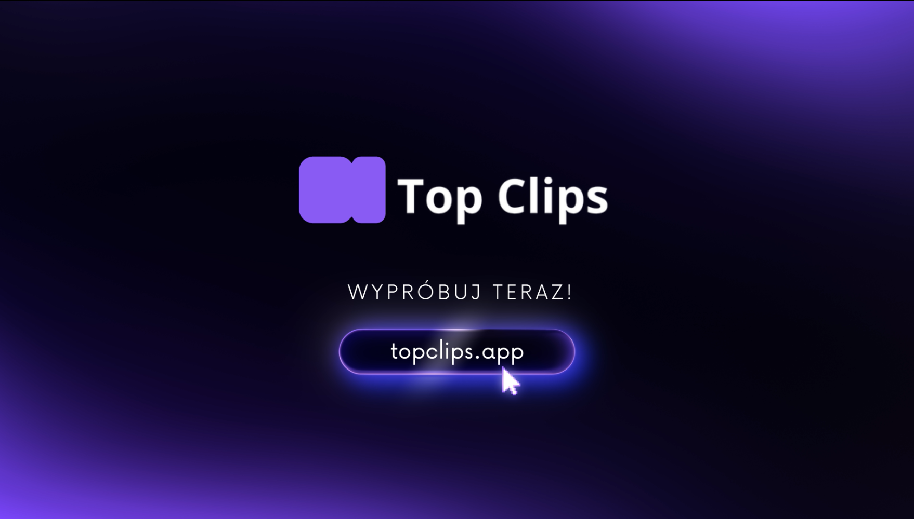
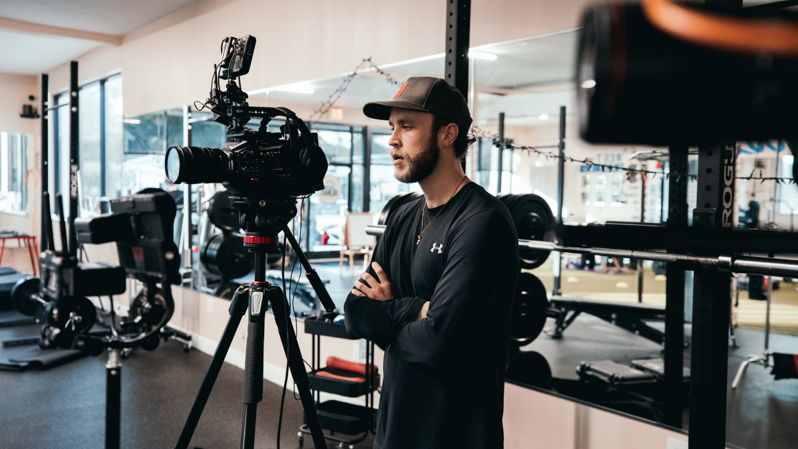
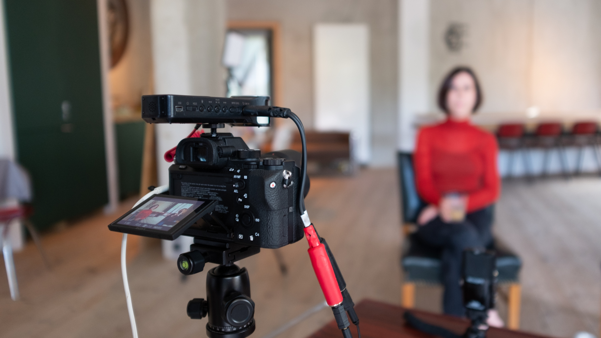
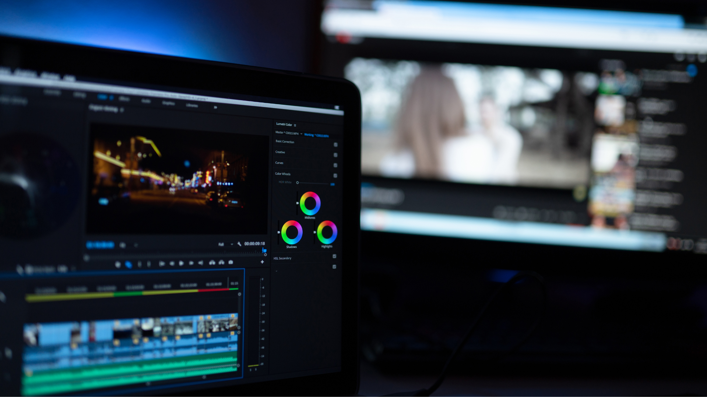

Automatyczne tworzenie krótkich filmów z długich nagrań
Top Clips generuje merytoryczne wypowiedzi wideo bez ręcznego montażu. Oszczędzaj czas i twórz zawartość,
która rzeczywiście działa.

Co nas wyróżnia?
Wgraj długie nagranie, a Top Clips automatycznie wyodrębni najlepsze fragmenty. Bez ręcznego montażu, bez straty czasu.
Tematyczna selekcja wypowiedzi
Użytkownik podaje temat (np. „o publiczności wydarzenia”)– aplikacja analizuje transkrypcję, rozumie kontekst i generuje setkę odpowiadającą na zadany temat.

Oczyszczanie nagrania
Usuwanie przerywników dźwiękowych („yyy”), zbędnych pauz i zawahań – dzięki czemu wypowiedzi brzmią profesjonalnie i są gotowe do publikacji bez dodatkowej obróbki.
Działa po polsku
Narzędzie jest w pełni dostosowane do obróbki materiałów nagranych w języku polskim.
Automatyczne tworzenie „setek”
Krótkie, merytoryczne klipy (15–60 sekund), które pozwalają w kilka chwil pokazać sens wydarzenia, projektu lub działań firmy — bez ręcznego przeszukiwania godzin nagrań.
Edycja w czasie rzeczywistym
Możliwość natychmiastowego skrócenia lub przycięcia wygenerowanej wypowiedzi – bez potrzeby eksportu do zewnętrznego edytora.

Dla kogo jest to rozwiązanie?
Top Clips pracuje dla wszystkich, którzy tworzą.
Twórcy wideo oszczędzają godziny tygodniowo
Freelancerzy, podcasterzy, edukatorzy, trenerzy, eksperci branżowi. Osoby, które chcą samodzielnie tworzyć klipy do social mediów, kursów online czy materiałów promocyjnych.
Agencje skalują produkcję bez dodatkowych kosztów
Agencje kreatywne, działy marketingu, organizatorzy eventów, redakcje, instytucje publiczne. Wszyscy, którzy pracują z długimi materiałami wideo – np. z webinarów, konferencji, wywiadów, debat czy relacji z wydarzeń.
Dla każdego, kto pracuje
z treściami wideo
Jesteś prawnikiem i chcesz szybko znaleźć kluczowy moment w trzygodzinnym nagraniu? A może potrzebujesz wyciąć 30-sekundowe podsumowania z prezentacji startupów albo skrócić nagranie z życzeniami urodzinowymi do najważniejszych fragmentów?
Twórz setki długich nagrań w kilka minut
Wypróbuj Top Clips w wersji beta bez zobowiązań i otrzymaj 2 godziny przetwarzania materiałów za darmo!

Najczęstsze pytania
Znajdź odpowiedzi na najczęstsze wątpliwości dotyczące Top Clips.
Top Clips przetwarza nagrania w kilka minut, w zależności od ich długości. Algorytm analizuje transkrypcję, rozumie kontekst wypowiedzi i niemal natychmiast proponuje najlepsze fragmenty gotowe do publikacji.Użytkownik może wskazać temat „setki”, a następnie dowolnie ją rozszerzyć lub uzupełnić o kolejne fragmenty z nagrania.
Nie. Top Clips został zaprojektowany tak, aby działał automatycznie — niezależnie od Twojego doświadczenia w montażu czy pracy z wideo. Wystarczy wgrać nagranie, a aplikacja sama przeanalizuje treść i zaproponuje gotowe klipy.
Tak. Top Clips został zaprojektowany z myślą o języku polskim i rozumieniu kontekstu wypowiedzi, a nie tylko pojedynczych słów.
Tak. Każdy wygenerowany klip możesz swobodnie edytować i dopasować do swoich potrzeb. Top Clips daje Ci gotowy punkt wyjścia — ostateczny kształt zawsze należy do Ciebie.
Korzystanie z aplikacji w wersji beta jest bezpłatne. Po wypełnieniu krótkiej ankiety dotyczącej Twoich nawyków pracy z wideo otrzymasz możliwość przetworzenia do 2 godzin materiału. Feedback z testów pomoże nam dalej rozwijać Top Clips.
Napisz do nas
Masz pytania lub wątpliwości? Skontaktuj się z nami!